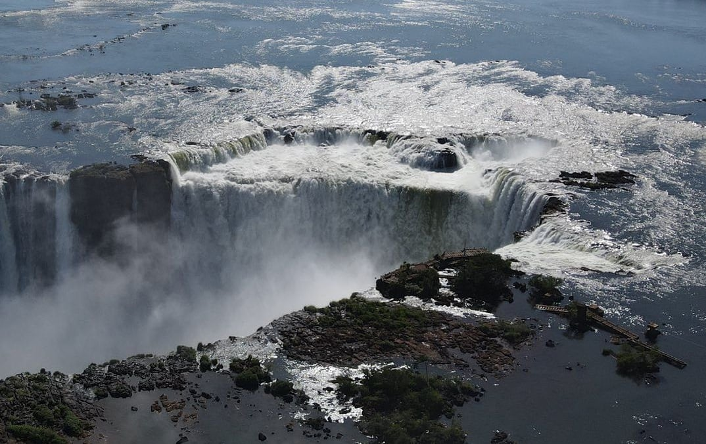
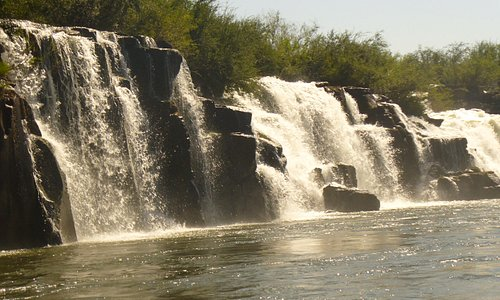
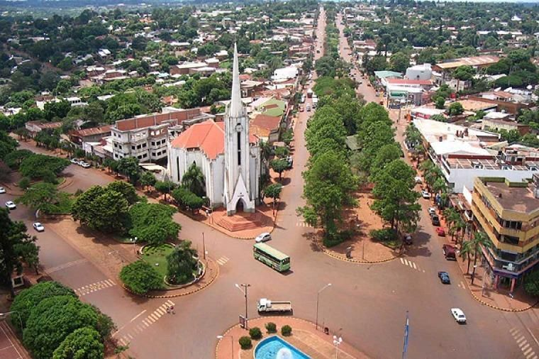

Informacion de MISIONES
Misiones en el texto de la Constitución provincial: Provincia de Misiones. es una de las veintitrés provincias de la República Argentina. A su vez, es uno de los veinticuatro estados autogobernados o jurisdicciones de primer orden que conforman el país, y uno de los veinticuatro distritos electorales legislativos nacionales. Su capital y ciudad más poblada es Posadas. Está ubicada en el noreste del país, en la región del Norte Grande Argentino, limitando al norte y este con los ríos Iguazú, San Antonio, Pepirí Guazú y Uruguay que la separan de Brasil, al sur con Corrientes, por medio de los arroyos Itaembé y Chimiray, y al oeste con el río Paraná que la separa de Paraguay.
PPoblacion:1.280.960
Lugares turísticos
-

Parque Nacional Iguazu
El Parque Nacional Iguaz es una excelente opción para hacer turismo, ubicado en el extremo Norte de la provincia de Misiones. Dentro del parque están las Cataratas de Iguazu, senderos para caminar o manejar bicicleta, pasarelas hasta La Garganta del Diablo, selva misionera y animales exóticos. El muelle de Iguaz ofrece viajes en lancha para visitar la isla de San Martin.
Ubicación -

Garganta Del Diablo
La Garganta del Diablo es uno de los lugares tursticos de Misiones, situada dentro del Parque Nacional Iguaz, y representa el lmite fronterizo entre Argentina y Brasil. Para llegar, se puede tomar un autobs en la entrada del parque o pasear por el agua. Estas cataratas son el hogar del Vencejo de Cascada, una especie de ave que suele construir sus nidos detrás de los saltos.
Ubicación -

Posadas
Posadas es la capital de Misiones en Argentina y uno de los lugares con marcada concentración turstica. Se encuentra unida con Garupá y Encarnación a través del ro Paraná. Se pueden apreciar impresionantes reservas naturales, hallar muestras históricas, disfrutar del ambiente nocturno y practicar actividades como canotaje y cerreras con motos acuáticas.
Ubicación
-

Aristobulo De Valle
Aristóbulo del Valle es una localidad situada en el corazón de Misiones, situado a una hora y 50 minutos de la capital. Está situado a una hora y 50 minutos de la Ruta Nacional y tiene cataratas cristalinas, campings, piletas naturales y cabaas para pasarsela. En su interior se puede apreciar la actividad de agricultura y ganadera, as como la presencia de especies arbóreas tpicas y talladas en madera durante la época de los jesuitas.
Ubicación -

Las Ruinas De San Ignacio
San Ignacio es un lugar ideal para viajar a Misiones, con paisajes naturales como el Parque Nacional "Peón del Tey Cuaré" y el ro Yabebir. El espectáculo de luz y sonido proyecta en pantallas de bruma sobre el agua te ofrece un deleite histórico. La Ruinas Jesuticas son un buen alternativa. Si pasas por San Ignacio, no dejar de visitar "Bamb", un lugar de ambiente familiar atendido por el seor Marcelo y su hijo.
Ubicación -

Montecarlo
Montecarlo es uno de los principales atractivos tursticos de Misiones, situado entre Eldorado y El Soberbio. Puedes acceder a Montecarlo por automóvil, con Ofertas Flecha Bus y Plus Ultra, para disfrutar de animales como el dorado. Tiene la oportunidad de conocer el club de pesca, con botes, embarcaderos y un restaurante especializado en Ceviche.
Ubicación